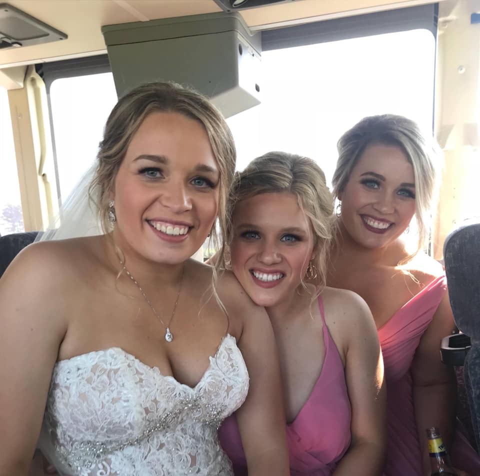
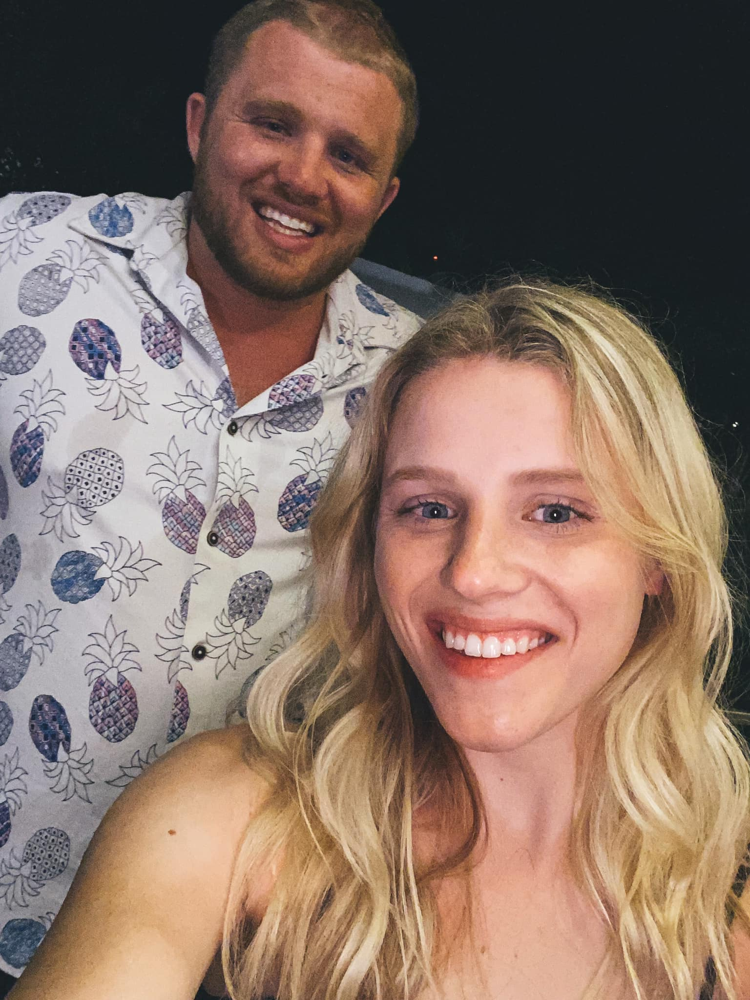

Here I will share some of my favorite pictures- both pictures that I have taken, and just some of my favorite pictures in general so you can get to know me more. Through these pictures I want you to get a better sense of my style and what is important to me. I hope you enjoy!
 